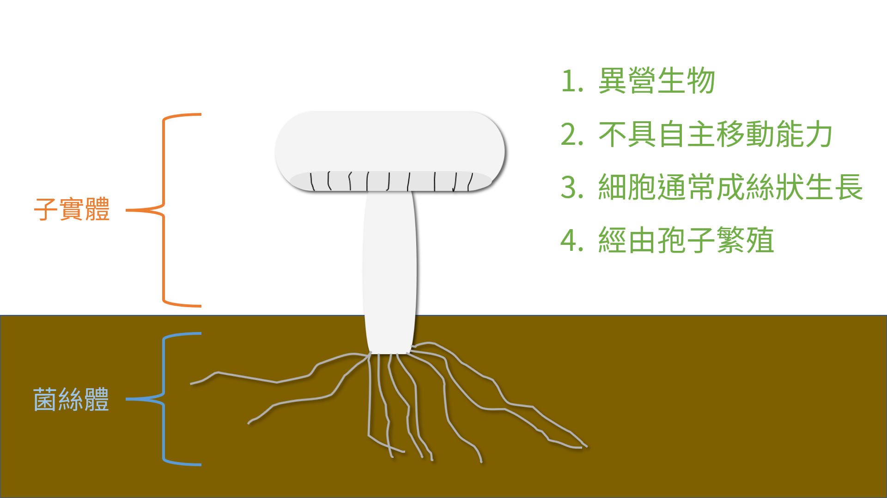

菌事 Fungal Stories
真菌簡介
物種介紹
日常真菌
真菌學家
什麼是真菌？What is a fungus? (1/2)
文章資訊
分類：
真菌簡介
發布日期：2022/03/13
談到真菌大多數人會聯想到菇類，然而真菌的範疇卻不只是菇類而已，生活中常見的黴菌或者大眾耳熟能詳的靈芝都是真菌的一員，其中更多是肉眼不可見的微觀真菌。要了解真菌為何，可以先從真菌的詞源開始了解，「真菌」的英文為「fungus」，fungus一詞源自於羅馬帝國時期（西元前27年–西元395年）拉丁文中蘑菇（廣義的傘菌）的意思；「真菌學」的英文「mycology」則是源自於希臘文中蘑菇的意思（mykes），由此可知蘑菇從古至今都是真菌指標性的象徵，也意味著蘑菇具備了真菌的各項特徵。那麼一個真菌應該具備怎麼樣的特徵呢？
以下四點為廣義真菌的普遍特徵：
1. 真菌與動物一樣屬於異營生物（heterotrophs），無法行光合作用。
2. 真菌與植物一樣不具有自主的移動能力，僅能靠孢子做長距離傳播。
3. 真菌細胞通常呈絲狀生長（filamentous growth）。
4. 真菌經由孢子（spores）繁殖。

然而，有一些生物族群雖然具有上述的幾點特徵，但仍有許多地方與真菌的核心族群有顯著的差異，像是黏菌（myxomycetes）、卵菌（oomycetes）等，在分子譜系學（molecular phylogenetics）研究上也發現它們與真菌的親緣關係甚遠，因此，在早期真菌學界便對廣義真菌和狹義真菌有了許多的討論，而後在Robert Whittaker提出五界說時，也將黏菌、卵菌等與真菌相似的廣義真菌劃分在「真菌界」之外，故現今的真菌界指的是狹義真菌，至於廣義真菌（如黏菌和卵菌）與狹義真菌的定義和比較將於下期文章為大家解析。
參考資料
1. Meike Piepenbring (2015) Introduction to Mycology in the Tropics.
延伸閱讀
什麼是真菌？(2/2)